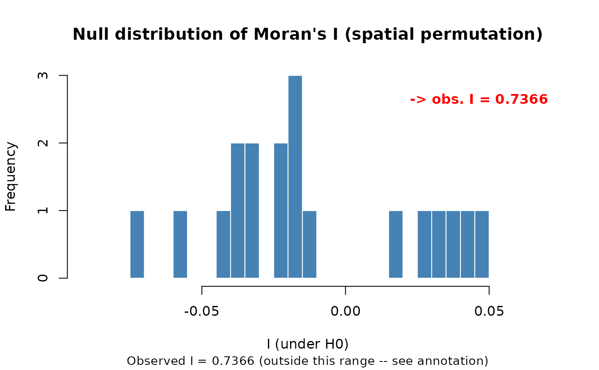
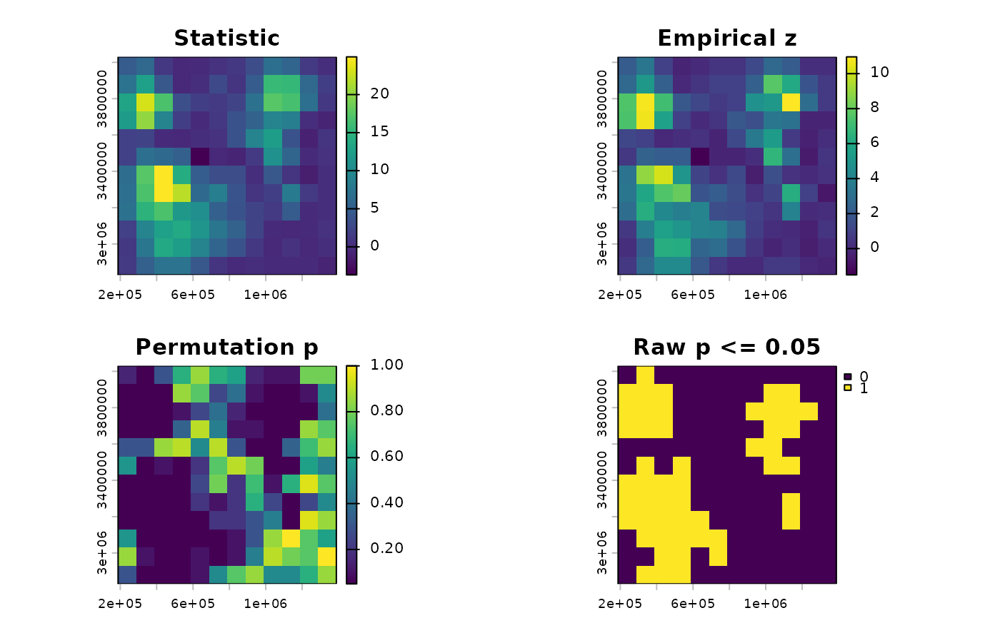
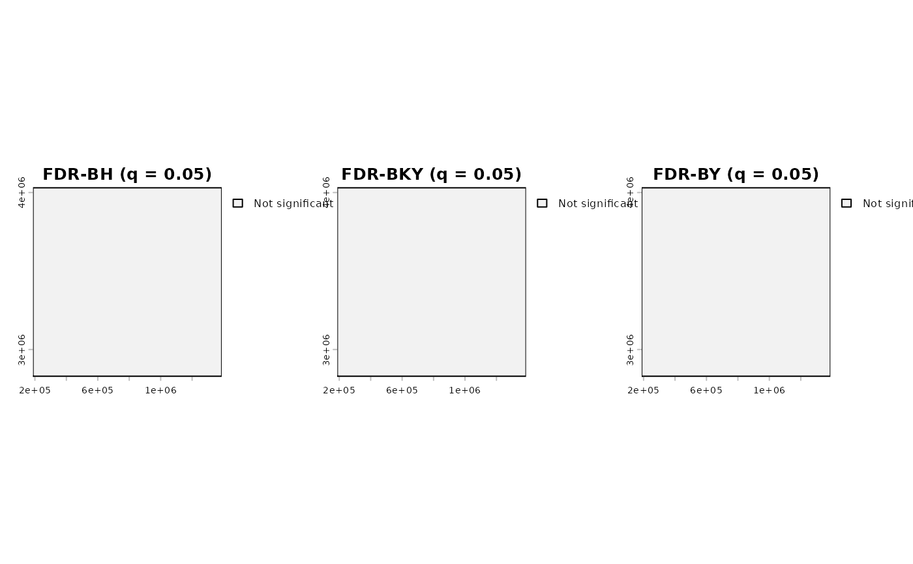

Permutation-based spatial autocorrelation tests
Source:R/spatial_autocorrelation.R
spatial_autocorrelation.RdProvides one interface for global and local spatial-autocorrelation
analyses of a single-layer raster. Global analysis computes Moran's I
or Getis-Ord General G. Local analysis computes a local Moran's I or
Getis-Ord Gi* statistic for every valid cell. Local significance is
assessed by spatial permutation. Its p-value raster can subsequently
be passed to fdr_correction() for BH, BKY or BY control.
Arguments
- x
A single-layer
terra::SpatRastercontaining finite numeric values orNA.- method
Which statistic to compute.
"moran"(default): global Moran's I (Moran, 1950) – accepts any numeric values (positive, negative, or mixed), tests whether nearby cells tend to have similar values, whatever those values are."getis_ord": Getis-Ord General G (Getis & Ord, 1992) – requires non-negative values (errors otherwise; see "Methodological background" below for why), tests specifically whether high values cluster near other high values (or low near low) rather than just "similar near similar" – a genuinely different question from Moran's I, not a variant of the same one, and the two do not always agree. Choose Moran's I when the question is whether neighbouring values are generally similar; choose General G when the question specifically concerns clustering of high values.- scope
Spatial scope.
"global"(default) computes one statistic for the complete raster."local"computes one local Moran's I or Getis-Ord Gi* statistic and one permutation p-value per valid cell.- connectivity
"queen"(default) or"rook".- nperm
Positive integer. Number of permutations. Start with
99to check the analysis runs correctly, use999+for a result to report, and9999for publication-quality analyses when computationally feasible (p-value resolution is1/(nperm + 1)).- alternative
NULL(default) selects"greater"for global tests and"two.sided"for local tests. May also be supplied explicitly as"greater","two.sided", or"less". The global default reflects the common question of whether nearby observations are more positively associated than expected under spatial randomisation.- alpha
One finite number strictly between 0 and 1. Significance level used only for the exploratory, unadjusted
significant_rawmap returned by local analysis. It does not control multiplicity. Usefdr_correction()on the returnedpraster and specify its targetqfor BH, BKY or BY inference.- seed
One finite numeric value or
NULL. Random seed for reproducibility (used for both sequential and parallel execution).- n_cores
Positive integer. Number of cores for the permutation loop (each permutation is independent).
1(default): sequential.> 1: uses aparallel::makeCluster()PSOCK cluster. The spatial topology (the expensive part for large rasters) is computed once and shared, not recomputed per permutation or per worker.- precomputed_neighbourhood
Optional. Skips recomputing the spatial adjacency (the same "expensive for large rasters" step
n_coresabove already shares across permutations) when this function is called repeatedly on the same raster geometry – most usefully, together withtrend_test()'s ownprecomputed_neighbourhoodargument, when both functions are run on the same geometry in the same analysis. Accepts the output ofprepare_cmk_neighbourhood()directly when it uses the matching default 3 by 3 adjacency – despite the name, both functions then build the identical structure underneath. Broader CMK windows have a different signature and are rejected rather than silently substituted. ItsWcomponent is validated as a square matrix with one row and column per raster cell. IfNULL(typical single-call use), it is computed internally.- report
Logical. If
TRUE(default), automatically print the scope-specific summary and draw its plot once the test finishes. Global output shows the null distribution; local output maps the statistic, empirical z, raw p-value and exploratory unadjusted significance decision.- verbose
Logical. Print progress messages and elapsed time.
Value
For scope = "global", returns an object of class
c("spatial_autocorrelation_global", "spatial_autocorrelation", "sptrends"): a list with statistic (observed Moran's I or
Getis-Ord G, depending on method), method, sign ("positive"
or "negative", method = "moran" only – General G is always
non-negative for non-negative inputs), scope, p (permutation
p-value), alternative, nperm, null_dist (the null
distribution), and N (valid cell count).
For scope = "local", returns an object of class
c("spatial_autocorrelation_local", "spatial_autocorrelation", "sptrends"). Its statistic, z, p, and significant_raw
components are single-layer rasters. null_mean and null_sd
store cell-wise permutation summaries and the empirical standardised
statistic without retaining the potentially enormous
cell-by-permutation matrix. permutation_seeds records the generated
streams for exact auditing of the Monte Carlo calculation. N is
the valid-cell count and N_tested excludes valid cells without any
valid neighbour; their local outputs are NA and
fdr_correction() excludes them from the hypothesis family.
Details
This is a general-purpose spatial diagnostic, not an FDR-specific utility. It can be applied to environmental variables, model residuals, estimated coefficients, test statistics, probabilities or other numeric spatial fields.
Function type: Spatial diagnostic function – performs global or local spatial-autocorrelation inference on one spatial field. It is independent of the temporal trend workflows.
Typical use
one spatial raster (variable, residual, coefficient, or statistic)
|
spatial_autocorrelation(scope = "global" or "local")
|
observed statistic + permutation inference + null distributionThe input is one spatial field, not a raster time series. A trend workflow output can be analysed only after selecting one derived layer, such as a slope or test-statistic raster.
Methodological details
Applications
Typical applications include describing clustering or dispersion in environmental variables, detecting spatial structure in model residuals, and examining the spatial distribution of estimated trends or effect sizes. One optional application is diagnosing dependence in a field of cell-wise inferential results before selecting or interpreting a multiple-testing procedure. Moran's I does not formally test independence or the complete dependence conditions underlying BH, BKY or BY, and must not be used as an automatic selector of an FDR procedure.
Spatial autocorrelation is not itself a temporal trend test. The input
represents one spatial distribution, not a time series. The optional
moran_check argument of fdr_correction() is only one convenience
use of this independent diagnostic and has the same interpretive
limitation described above.
Local statistics
With scope = "local" and method = "moran", the statistic for cell
i is I_i = z_i sum_j(w_ij z_j) / m_2, where z_i is the deviation
from the global mean and m_2 = sum_i(z_i^2) / N. The binary queen or
rook weights are not row-standardised. Under this definition,
sum_i(I_i) = S0 * I_global, which is checked directly in the test
suite. Positive values indicate locally similar deviations; negative
values indicate a focal deviation surrounded by deviations of the
opposite sign. Significance still depends on the permutation test.
With method = "getis_ord", the local Gi* statistic is
G_i* = sum_j(w_ij* x_j) / sum_j(x_j), where w_ii* = 1: the focal
cell is included, which distinguishes Gi* from Gi. High values indicate
local concentrations of high raw values. The same non-negative-input
requirement as General G applies. This function uses each cell's
permutation distribution rather than an analytic normal approximation.
The returned z raster standardises each observed local statistic by
its own permutation mean and standard deviation. It aids comparison
across cells with different neighbour counts, but it is not assigned
an analytic normal p-value; use the returned permutation inference.
Valid cells with no valid spatial neighbour are returned as NA for
local inference and are excluded from the multiple-testing family.
Methods and method selection
Original publications: Moran (1950) for
method = "moran"; Getis & Ord (1992) formethod = "getis_ord".Main references: Moran (1950)/Getis & Ord (1992) for the statistics themselves; Tobler (1970) for the conceptual grounding of why spatial dependence is the expected default in geographic data; Hope (1968) for the permutation-based significance test used here in place of either statistic's own analytic Z approximation. Full citations under "References" below.
Why Getis-Ord needs non-negative values, specifically: General G is a ratio of a weighted sum of products of raw values (
sum(w_ij * x_i * x_j)) to the sum of all pairwise products (sum(x_i * x_j)), fori != j– unlike Moran's I, it does not mean-centre the values first. With mixed-sign data,x_i * x_jcan be negative for two high-magnitude values of opposite sign, which breaks the statistic's actual interpretation (a proportion of "high-value pairs found near each other") – not merely unusual input, a violated precondition. Matches the same restriction in ArcGIS's High/Low Clustering (Getis-Ord General G) tool and other established implementations.Typical applications: Moran's I for "are similar values near each other"; General G for "do high values specifically cluster together". Inputs may be raw environmental variables, residuals, coefficients or inferential fields. For mixed-sign statistics, Moran is usually meaningful directly; General G requires a scientifically justified non-negative input.
Statistical assumptions and permutation inference
The classic analytic formulas for both statistics' significance need either a normality assumption (the values are normally distributed) or a randomisation assumption (the values are exchangeable), and the resulting Z-score can be inaccurate whenever the actual data violate them (Hope, 1968). Environmental variables, residuals and inferential outputs can all be bounded, skewed or otherwise non-normal. A permutation test builds the null distribution by actually reshuffling the observed values across the raster's cells (preserving their real distribution, skew, and bounds, whatever it is) and recomputing the chosen statistic each time, so significance comes from resampling the data you actually have rather than from an assumption about a distribution it may not follow.
Local inference and multiple testing
A local statistic map without a null distribution is descriptive: it shows where local association is large or small, but it supplies no inferential p-value. Consequently, there is no meaningful "alpha without permutations" in this implementation. Local p-values are Monte Carlo p-values obtained by permuting the observed values.
The returned significant_raw raster applies p_i <= alpha, treating
every cell as though it were the only hypothesis. It is exploratory
and controls neither FDR nor FWER across the map. For multiple-testing
inference, pass the returned p raster to fdr_correction(). That
function provides BH, BKY and BY from one independently tested and
documented implementation. BH and BKY require independent tests or
suitable positive dependence; BY is valid under arbitrary dependence
but is usually more conservative. In all three cases, q is the target
FDR and is not another name for the unadjusted per-cell alpha.
Every permutation is global and joint: all valid values are reassigned across the raster once, and every local statistic is recomputed from that same reassignment. It is not the conditional LISA permutation used by some software, where the focal value is held fixed and potential neighbours are sampled (Anselin, 1995). The two randomisation hypotheses answer different questions and their cell-wise p-values need not coincide. Permutation validity requires exchangeability under the stated spatial-randomisation null; it is not assumption-free.
More permutations improve Monte Carlo resolution and stability; they
do not mechanically make a result more significant. The smallest
attainable p-value is 1 / (nperm + 1) because both numerator and
denominator use the standard plus-one correction (Phipson & Smyth,
2010), so a randomly sampled permutation test never reports zero. A
gradual strategy is useful:
use about 99 permutations for exploratory checking, 999 or more for a
stable analysis, and 9999 when tail resolution is important and the
computational cost is acceptable. Results based on only 99
permutations should be described as exploratory rather than final.
Computational considerations
Runtime grows with the number of valid cells and permutations; local
analysis must update a statistic for every tested cell in every joint
randomisation. Reusing precomputed_neighbourhood avoids rebuilding
topology, while n_cores > 1 distributes independent permutations.
Increasing nperm improves p-value resolution but increases runtime
approximately proportionally.
Limitations
Methodological: the magnitude of either statistic is not
universally comparable across different weight matrices (Cliff & Ord,
1981), so this function does not categorise the result into
"low/moderate/strong" by default (see classify_moran() for an
explicitly non-standard convenience label, method = "moran" only –
General G's natural range and expected value under H0 differ enough
from Moran's I that the same low/moderate/strong thresholds would not
transfer meaningfully, so no equivalent label is offered for method = "getis_ord"). With scope = "global", the result is one number for
the complete raster and does not identify where clusters occur.
Local Moran's I and Getis-Ord Gi* require one test per cell and,
consequently, explicit multiple-testing control for confirmatory maps.
Apply BH, BKY or BY with fdr_correction() and its target q; do not
interpret the raw per-cell alpha map as family-level inference.
This diagnostic is evidence of spatial dependence, not proof
that a downstream method's complete dependence assumptions hold.
Implementation: fixed queen/rook neighbourhood, not a generic distance-band or k-nearest definition. NA cells are excluded, not imputed.
Quality assurance
Moran's I is checked against direct matrix calculations and exact
small-raster references. Permutation tests cover reproducible seeds,
alternative hypotheses, queen/rook neighbourhoods, missing and
constant rasters, reused adjacency objects, and sequential/parallel
equivalence. Local Moran's I is checked through its exact algebraic
identity with global Moran's I. Gi* is checked against hand-computed
small-raster results. Raw permutation p-values, raster geometry,
missing values, local S3 methods, and forwarding the local p-value
raster to fdr_correction() have separate regression tests. BH, BKY
and BY are independently tested in that function's own suite. See
?sptrends for the package-wide release-check protocol.
References
Primary references for the statistics being tested:
Moran, P.A.P. (1950) Notes on Continuous Stochastic Phenomena. Biometrika, 37(1-2), 17-23. doi:10.1093/biomet/37.1-2.17
Getis, A. and Ord, J.K. (1992) The Analysis of Spatial Association by Use of Distance Statistics. Geographical Analysis, 24(3), 189-206. doi:10.1111/j.1538-4632.1992.tb00261.x
Anselin, L. (1995) Local Indicators of Spatial Association – LISA. Geographical Analysis, 27(2), 93-115. doi:10.1111/j.1538-4632.1995.tb00338.x
Ord, J.K. and Getis, A. (1995) Local Spatial Autocorrelation Statistics: Distributional Issues and an Application. Geographical Analysis, 27(4), 286-306. doi:10.1111/j.1538-4632.1995.tb00912.x
Conceptual grounding for why spatial dependence is the expected default in geographic data (motivates testing for it at all):
Tobler, W. (1970) A Computer Movie Simulating Urban Growth in the Detroit Region. Economic Geography, 46(sup1), 234-240. doi:10.2307/143141
Extended treatment of Moran's I and related spatial autocorrelation statistics:
Cliff, A.D. and Ord, J.K. (1981) Spatial Processes: Models and Applications. Pion, London.
Basis for using permutation rather than the analytic Z approximation to obtain the p-value (see "Why permutation" above):
Hope, A.C. (1968) A simplified Monte Carlo significance test procedure. Journal of the Royal Statistical Society, Series B, 30(3), 582-598. doi:10.1111/j.2517-6161.1968.tb00759.x
Phipson, B. and Smyth, G.K. (2010) Permutation P-values Should Never Be Zero: Calculating Exact P-values When Permutations Are Randomly Drawn. Statistical Applications in Genetics and Molecular Biology, 9(1), Article 39. doi:10.2202/1544-6115.1585
On FDR procedures and the positive-dependence setting this function can diagnose but cannot establish:
Benjamini, Y., & Yekutieli, D. (2001) The control of the false discovery rate in multiple testing under dependency. Annals of Statistics, 29(4), 1165-1188. doi:10.1214/aos/1013699998
Benjamini, Y. and Hochberg, Y. (1995) Controlling the False Discovery Rate: A Practical and Powerful Approach to Multiple Testing. Journal of the Royal Statistical Society: Series B, 57, 289-300. doi:10.1111/j.2517-6161.1995.tb02031.x
Benjamini, Y., Krieger, A.M. and Yekutieli, D. (2006) Adaptive Linear Step-Up Procedures that Control the False Discovery Rate. Biometrika, 93(3), 491-507. doi:10.1093/biomet/93.3.491
See also
Other Spatial autocorrelation diagnostic functions:
classify_moran(),
spatial_autocorrelation_null_plot(),
spatial_autocorrelation_summary()
Examples
# Use a small real-data region at the dataset's native resolution so the
# example remains suitable for routine package checks.
series <- read_ordered_stack(example_data("vhp_ndvi"))
#> Temporal order auto-detected with pattern '(19[0-9]{2}|20[0-9]{2})'.
#> Temporal order verification (mandatory, cannot be skipped):
#> stack_position detected_number file
#> 1 1982 VHP_SMN_annual_ndvi_1982.tif
#> 2 1983 VHP_SMN_annual_ndvi_1983.tif
#> 3 1984 VHP_SMN_annual_ndvi_1984.tif
#> 4 1985 VHP_SMN_annual_ndvi_1985.tif
#> 5 1986 VHP_SMN_annual_ndvi_1986.tif
#> 6 1987 VHP_SMN_annual_ndvi_1987.tif
#> 7 1988 VHP_SMN_annual_ndvi_1988.tif
#> 8 1989 VHP_SMN_annual_ndvi_1989.tif
#> 9 1990 VHP_SMN_annual_ndvi_1990.tif
#> 10 1991 VHP_SMN_annual_ndvi_1991.tif
#> 11 1992 VHP_SMN_annual_ndvi_1992.tif
#> 12 1993 VHP_SMN_annual_ndvi_1993.tif
#> 13 1994 VHP_SMN_annual_ndvi_1994.tif
#> 14 1995 VHP_SMN_annual_ndvi_1995.tif
#> 15 1996 VHP_SMN_annual_ndvi_1996.tif
#> 16 1997 VHP_SMN_annual_ndvi_1997.tif
#> 17 1998 VHP_SMN_annual_ndvi_1998.tif
#> 18 1999 VHP_SMN_annual_ndvi_1999.tif
#> 19 2000 VHP_SMN_annual_ndvi_2000.tif
#> 20 2001 VHP_SMN_annual_ndvi_2001.tif
#> 21 2002 VHP_SMN_annual_ndvi_2002.tif
#> 22 2003 VHP_SMN_annual_ndvi_2003.tif
#> 23 2004 VHP_SMN_annual_ndvi_2004.tif
#> 24 2005 VHP_SMN_annual_ndvi_2005.tif
#> 25 2006 VHP_SMN_annual_ndvi_2006.tif
#> 26 2007 VHP_SMN_annual_ndvi_2007.tif
#> 27 2008 VHP_SMN_annual_ndvi_2008.tif
#> 28 2009 VHP_SMN_annual_ndvi_2009.tif
#> 29 2010 VHP_SMN_annual_ndvi_2010.tif
#> 30 2011 VHP_SMN_annual_ndvi_2011.tif
#> 31 2012 VHP_SMN_annual_ndvi_2012.tif
#> 32 2013 VHP_SMN_annual_ndvi_2013.tif
#> 33 2014 VHP_SMN_annual_ndvi_2014.tif
#> 34 2015 VHP_SMN_annual_ndvi_2015.tif
#> 35 2016 VHP_SMN_annual_ndvi_2016.tif
#> 36 2017 VHP_SMN_annual_ndvi_2017.tif
#> 37 2018 VHP_SMN_annual_ndvi_2018.tif
#> 38 2019 VHP_SMN_annual_ndvi_2019.tif
#> 39 2020 VHP_SMN_annual_ndvi_2020.tif
#> 40 2021 VHP_SMN_annual_ndvi_2021.tif
#> 41 2022 VHP_SMN_annual_ndvi_2022.tif
#> 42 2023 VHP_SMN_annual_ndvi_2023.tif
 #> Stack built: 42 layers, 146 x 338 cells.
#> >> [read_ordered_stack()] elapsed: 0.12 s
complete <- which(stats::complete.cases(
terra::values(series, mat = TRUE)
))
centre <- terra::xyFromCell(
series, complete[ceiling(length(complete) / 2)]
)
resolution <- terra::res(series)
region <- terra::ext(c(
centre[1] + c(-6, 6) * resolution[1],
centre[2] + c(-6, 6) * resolution[2]
))
series <- terra::crop(series, region, snap = "near")
X <- terra::values(series, mat = TRUE)
ok <- stats::complete.cases(X)
r <- series[[1]]
r_values <- terra::values(r, mat = FALSE)
r_values[!ok] <- NA_real_
terra::values(r) <- r_values
# \donttest{
# I > 0 means neighbouring cells tend to have similar values
# (positive spatial autocorrelation); result$p is the permutation
# p-value for that observed I.
# Nineteen permutations are sufficient for this interface example;
# substantive inference should use a larger value.
result <- spatial_autocorrelation(
r, nperm = 19, seed = 1, report = FALSE, verbose = FALSE
)
result
#> <Moran's I permutation test result>
#> I = 0.7366 (sign: positive, category: strong*) | p-value (greater, nperm=19) = 0.0500
#> * this package's own descriptive convention -- not a recognised
#> disciplinary standard for Moran's I magnitude.
plot(result) # the null distribution, with the observed I marked
#> Stack built: 42 layers, 146 x 338 cells.
#> >> [read_ordered_stack()] elapsed: 0.12 s
complete <- which(stats::complete.cases(
terra::values(series, mat = TRUE)
))
centre <- terra::xyFromCell(
series, complete[ceiling(length(complete) / 2)]
)
resolution <- terra::res(series)
region <- terra::ext(c(
centre[1] + c(-6, 6) * resolution[1],
centre[2] + c(-6, 6) * resolution[2]
))
series <- terra::crop(series, region, snap = "near")
X <- terra::values(series, mat = TRUE)
ok <- stats::complete.cases(X)
r <- series[[1]]
r_values <- terra::values(r, mat = FALSE)
r_values[!ok] <- NA_real_
terra::values(r) <- r_values
# \donttest{
# I > 0 means neighbouring cells tend to have similar values
# (positive spatial autocorrelation); result$p is the permutation
# p-value for that observed I.
# Nineteen permutations are sufficient for this interface example;
# substantive inference should use a larger value.
result <- spatial_autocorrelation(
r, nperm = 19, seed = 1, report = FALSE, verbose = FALSE
)
result
#> <Moran's I permutation test result>
#> I = 0.7366 (sign: positive, category: strong*) | p-value (greater, nperm=19) = 0.0500
#> * this package's own descriptive convention -- not a recognised
#> disciplinary standard for Moran's I magnitude.
plot(result) # the null distribution, with the observed I marked

# Getis-Ord General G needs non-negative values -- abs() of a
# (possibly mixed-sign) trend statistic is a common way to get there
# when the question is "do high-magnitude values cluster together?"
r_abs <- abs(r)
result_g <- spatial_autocorrelation(r_abs, method = "getis_ord",
nperm = 19, seed = 1,
report = FALSE, verbose = FALSE)
result_g$statistic
#> [1] 0.05106012
# One optional inferential application: describing spatial association
# in the p-value raster from trend_test(). This does not prove PRDS
# or automatically choose an FDR procedure.
trend <- trend_test(series, report = FALSE, verbose = FALSE)
spatial_autocorrelation(
trend$stats$p, nperm = 19, seed = 1,
report = FALSE, verbose = FALSE
)
#> <Moran's I permutation test result>
#> I = 0.8052 (sign: positive, category: strong*) | p-value (greater, nperm=19) = 0.0500
#> * this package's own descriptive convention -- not a recognised
#> disciplinary standard for Moran's I magnitude.
# --- Local inference, followed by the existing FDR module ---
# The statistic is descriptive by itself. The p raster is based on
# permutations. significant_raw uses the per-cell alpha without
# correcting for the number of cells tested.
local <- spatial_autocorrelation(
r, scope = "local", nperm = 19, seed = 1,
report = FALSE, verbose = FALSE
)
local$statistic
#> class : SpatRaster
#> size : 12, 12, 1 (nrow, ncol, nlyr)
#> resolution : 100000, 100000 (x, y)
#> extent : 188154.6, 1388155, 2830043, 4030043 (xmin, xmax, ymin, ymax)
#> coord. ref. : World_Eckert_IV
#> source(s) : memory
#> name : local_moran
#> min value : -3.686694
#> max value : 24.956091
#> time (years): 1982-00-00
local$z
#> class : SpatRaster
#> size : 12, 12, 1 (nrow, ncol, nlyr)
#> resolution : 100000, 100000 (x, y)
#> extent : 188154.6, 1388155, 2830043, 4030043 (xmin, xmax, ymin, ymax)
#> coord. ref. : World_Eckert_IV
#> source(s) : memory
#> name : z_empirical
#> min value : -1.502481
#> max value : 10.960436
#> time (years): 1982-00-00
local$p
#> class : SpatRaster
#> size : 12, 12, 1 (nrow, ncol, nlyr)
#> resolution : 100000, 100000 (x, y)
#> extent : 188154.6, 1388155, 2830043, 4030043 (xmin, xmax, ymin, ymax)
#> coord. ref. : World_Eckert_IV
#> source(s) : memory
#> name : p
#> min value : 0.05
#> max value : 1
#> time (years): 1982-00-00
local$significant_raw
#> class : SpatRaster
#> size : 12, 12, 1 (nrow, ncol, nlyr)
#> resolution : 100000, 100000 (x, y)
#> extent : 188154.6, 1388155, 2830043, 4030043 (xmin, xmax, ymin, ymax)
#> coord. ref. : World_Eckert_IV
#> source(s) : memory
#> name : significant_raw
#> min value : 0
#> max value : 1
#> time (years): 1982-00-00
# BH, BKY and BY are all supplied by fdr_correction(); q is the
# target FDR, not the raw per-cell alpha above.
local_fdr <- fdr_correction(
local$p, method = c("BH", "BKY", "BY"), q = 0.05,
report = FALSE, verbose = FALSE
)
c(
raw_alpha = terra::global(
local$significant_raw, "sum", na.rm = TRUE
)[1, 1],
fdr_BH = terra::global(
local_fdr$rasters$sig_BH, "sum", na.rm = TRUE
)[1, 1],
fdr_BKY = terra::global(
local_fdr$rasters$sig_BKY, "sum", na.rm = TRUE
)[1, 1],
fdr_BY = terra::global(
local_fdr$rasters$sig_BY, "sum", na.rm = TRUE
)[1, 1]
)
#> raw_alpha fdr_BH fdr_BKY fdr_BY
#> 50 0 0 0
plot(local)

plot(local_fdr)

# Both functions build the identical spatial adjacency structure
# underneath -- computing it once and reusing it across both calls
# (rather than letting each recompute it independently) matters for
# large rasters specifically, where that step is the expensive part.
nb <- sptrends:::prepare_cmk_neighbourhood(series, ok)
spatial_autocorrelation(r, precomputed_neighbourhood = nb,
nperm = 19, seed = 1,
report = FALSE, verbose = FALSE)
#> <Moran's I permutation test result>
#> I = 0.7366 (sign: positive, category: strong*) | p-value (greater, nperm=19) = 0.0500
#> * this package's own descriptive convention -- not a recognised
#> disciplinary standard for Moran's I magnitude.
trend_test(series, precomputed_neighbourhood = nb,
report = FALSE, verbose = FALSE)
#> <Contextual Mann-Kendall (3x3) result>
#> Cells tested: 144 | significant at alpha=0.05 (uncorrected): 110 (76.4%)
# }